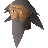

Saba

| Config name | death_saba |
| NPC id | 1070 |
| Combat level | hidden |
| Options | Talk-to |
| Wander range | 5 tiles from spawn |
| Defined in | scripts/quests/quest_death/configs/quest_death.npc |
Saba
A dishevelled and irritable hermit.
Show all 1 spawn on the world map → Open in knowledge graph →
Locations
| Area | Coordinates | Level | Count | Map |
|---|---|---|---|---|
| unlabelled | 2270, 4759 | 0 | 1 | view |
Dialogue
PlayerHello.
SabaHave you got rid of those pesky trolls yet?
PlayerThey will be gone soon! The Imperial Guard will use a secret way that starts from the back of the Sherpa's hut to destroy the troll camp!
SabaI shall have peace again at last!
SabaIf those pesky humans don't start trampling all over Death Plateau again that is!
PlayerHello.
SabaHave you got rid of those pesky trolls yet?
PlayerI'm working on it!
SabaGrr!
PlayerHello.
SabaHave you got rid of those pesky trolls yet?
PlayerWhere did you say this Sherpa was?
SabaI dunno but he must live around here somewhere!
PlayerHello!
SabaWhat?!
PlayerI'm looking for the guard that was on last night.
SabaWho?!
SabaBuzz off!
PlayerDo you know of another way up Death Plateau?
SabaWhy would I want to go up there? I just want to be left in peace!
SabaIt used to be just humans trampling past my cave and making a racket. Now there's those blasted trolls too! Not only do they stink and argue with each other loudly but they are always fighting the humans.
SabaI just want to be left in peace!
PlayerAh... I might be able to help you.
SabaHow?!
PlayerI'm trying to help the...er...humans to reclaim back Death Plateau. If you help me then at least you'd be rid of the trolls.
SabaHmph.
SabaLet me see...
SabaI've only been up Death Plateau once to complain about the noise but those pesky trolls started throwing rocks at me!
SabaBefore the trolls came there used to be a nettlesome Sherpa that took humans exploring or something equally stupid. Perhaps he'd know another way.
PlayerWhere does this Sherpa live?
SabaI don't know but it can't be far as he used to be around all the time!
PlayerNothing, sorry!
PlayerHello!
SabaWhy won't people leave me alone?!
Quests
Referenced in scripts
scripts/quests/quest_death/scripts/death_saba.rs2